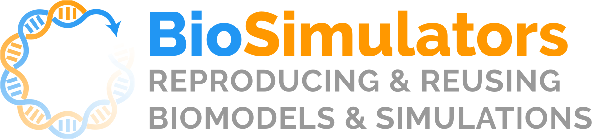
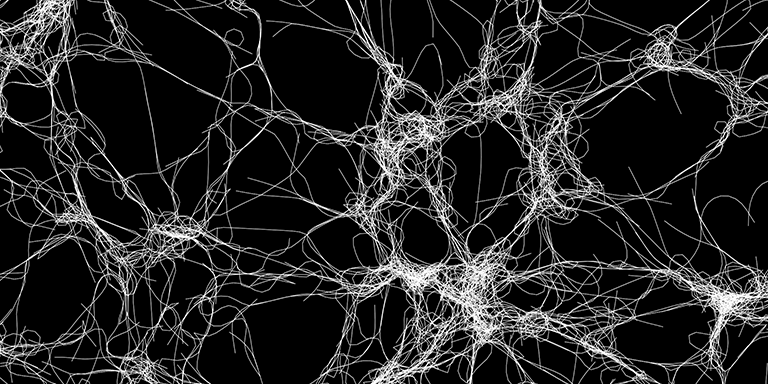
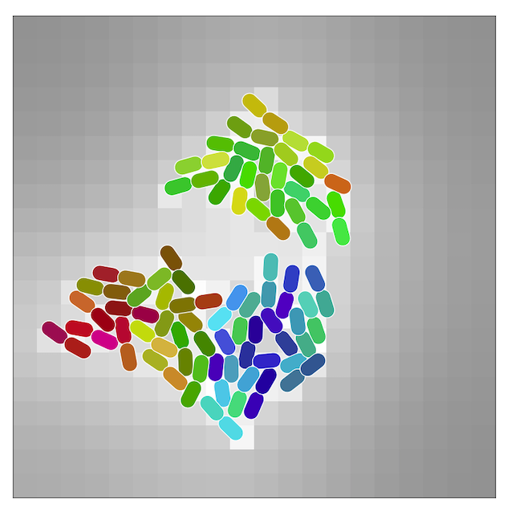

Welcome to the Vivarium Collective
The Vivarium Collective is a registry for open-source Vivarium-compatible simulation modules. These can be wired together to generate novel multi-scale simulations, with the most appropriate algorithm for each biological mechanism.
Featured Projects
Vivarium Core

Interface and Engine
This is the heart of the Vivarium Collective. Its modular interface allows for easy combination of systems biology models and simulators, which its engine executes as integrative simulations.
Documentation GitHubBioSimulators

BioSimulators is a free registry of biosimulation tools. The simulators support a broad range of frameworks (e.g., logical, kinetic), simulation algorithms (e.g., FBA, SSA), and formats (e.g., BNGL, CellML, NeuroML/LEMS, SBML, Smoldyn). BiosimulatorProcess is a general-purpose wrapper for Biosimulators that adds the Vivarium interface, and allows multiple Biosimulators to be combined in hybrid simulations. ODE_FBA is a Composite simulator, that wires together any ODE-based biosimulator with any FBA-based biosimulator.
ReaDDy
ReaDDy is a particle-based reaction-diffusion simulator, with particle interaction potentials that permit space exclusion, molecular crowding and aggregation to be modeled. Subunits are represented as spheres, and molecules as a more complex geometries such as a domain structures or polymer chains.
ReaDDy vivarium-ReaDDyCytosim
Cytosim is software for meso-scale simulations of cytoskeleton behavior. Physics are described by Langevin equations that recreate the Brownian motion of the fibers and include bending elasticity, fiber–fiber interactions and external forces. Constraints are added to maintain the length of the fibers.
Cytosim vivarium-cytosimMEDYAN

Mechanochemical Dynamics of Active Networks (MEDYAN) is a software package for simulating active network growth and dynamics with a reactive coarse-grained force field method. It is intended to be generally applicable to model interactions of semi-flexible polymers embedded in solutions with complex reaction-diffusion processes. One early application is modeling contractile acto-myosin networks consisting of actin filaments, alpha-actinin, cross-linking proteins, and myosin IIA mini-filaments.
MEDYAN vivarium-medyanChemotaxis

Multiscale model of E. coli chemotaxis
Vivarium Chemotaxis is a library for the model of E. coli chemotaxis. Its processes include ReceptorCluster, which models the activity of a chemoreceptor cluster, MembranePotential based on internal and external ion concentrations, and FlagellaMotor, which generates thrust and torque based on number of flagella and their motor states.
Multibody

Lattice is a composite simulator for spatial environments in which cells can grow, divide, and interact -- through physical forces as well as by uptake and secretion of molecules in a shared chemical milieu. It includes the processes Multibody for solid-body multi-cell physics and DiffusionField for diffusion of molecular concentrations in 2D fields.
Bioscrape
Bioscrape (Bio-circuit Stochastic Single-cell Reaction Analysis and Parameter Estimation) -- a Python package that supports deterministic and stochastic simulations of chemical reaction networks, specified by SBML.
GitHubCOBRA
COBRA_FBA is a wrapper process for the COBRApy FBA library, which can be loaded with BiGG models, and has been primarily used with BiGG model iAF1260b. The project includes CobraComposite, which adds auxiliary processes MassDeriver and VolumeDeriver to make a type of dynamic FBA. Other processes can constrain individual fluxes in COBRA_FBA through the flux_bounds port, allowing for a type of integrative FBA.
Smoldyn
Smoldyn is a particle-based spatial stochastic simulator. Molecules are represented by point-like particles in 1-, 2-, or 3-dimensional continuous space. Molecules diffuse by Brownian motion, react when they collide into each other, and interact with surfaces in a variety of realistic ways.
Website GitHubVivarium Project Template
This is a template repository, which can be used to start a new Vivarium project. It includes the module structure with example processes, composites, and experiments, and scripts to simplify the release of the project on PyPI.
GitHubYour Project
Want to add your project to the collective? Open a pull request! You can copy this card to get started.
Website